Why Claude Code (not claude.ai)
You've probably used Claude through the browser at claude.ai. Claude Code is different — and for team work, it's the right tool.
claude.ai (web/app) — each conversation starts blank. No memory of previous sessions. No shared context with teammates. Good for one-off questions.
Claude Code (CLI) — runs in your terminal, reads files from your machine, and loads shared context automatically at the start of every session.
How the memory system works
CLAUDE.md — project-level instructions that load at session start without any prompt. Tells Claude who we are, what stack we use, how to write commit messages, what safety rules to follow. Every team member gets identical baseline behaviour.
memory/ — a folder on Google Drive containing:
- rules.md — rules and patterns learned across all client work
- projects.md — all active clients: status, pending items, key asset IDs, what's blocked and why
- sessions/ — a file per working session recording what was done, what decisions were made, what's still pending
Why this matters for client work
When two people work on the same client:
- · Person A finishes an email flow, runs /ADMN-wrapup-v1, records "waiting on Steven to confirm free freight offer before activating"
- · Person B opens Claude Code two days later, runs /ADMN-startup-v1, and immediately sees that pending item — no Slack thread needed
The bottom line: claude.ai conversations are ephemeral and isolated. This setup is persistent and shared.
Prerequisites
Before starting, confirm all items below are in place.
Minimum specs
| Component | Minimum | Recommended |
|---|---|---|
| OS | Windows 11 64-bit (build 22000+) | Windows 11 latest updates |
| RAM | 4 GB | 8 GB+ |
| CPU | Intel Core i5 / AMD Ryzen 5 (2018+) | Intel Core i7 / Ryzen 7 or newer |
| GPU | DirectX 11 capable (required by Warp) | Any dedicated or integrated GPU 2018+ |
| Disk | 5 GB free | 20 GB+ (if mirroring Google Drive locally) |
| Internet | Required | Broadband — Claude API + Drive sync |
Accounts and software
- Windows 11 (64-bit) — confirm specs above are met
- Phase 3 Ecom Google Workspace account
- Claude AI team account invite
- Admin rights on machine
Install Git for Windows
Git for Windows provides Git Bash — the Unix shell that Warp uses underneath. You won't open Git Bash directly. After configuring Warp in Section 03, all terminal commands run inside Warp. Install Git first so Warp has a shell to use.
Option A — winget (recommended, Windows 11 built-in)
Open PowerShell (search Start menu → type "powershell") and run:
Follow the prompts. Git installs automatically. No browser required.
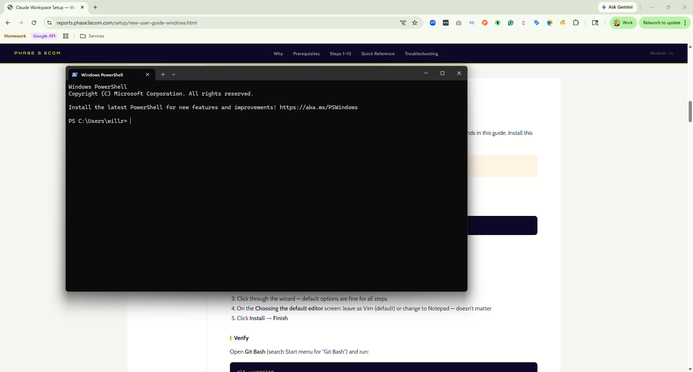
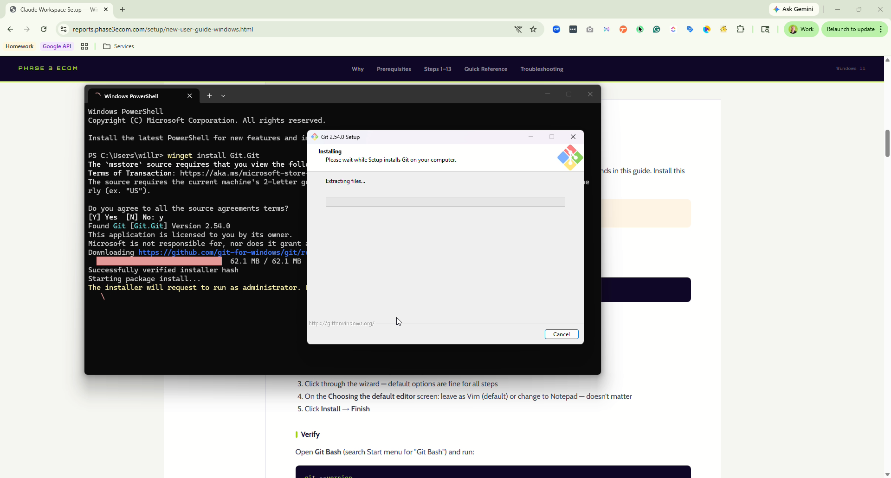
Option B — manual download
- Go to git-scm.com → click Download for Windows
- Run the downloaded
Git-[version]-64-bit.exeinstaller - Click through the wizard — default options are fine for all steps
- On the Choosing the default editor screen: leave as Vim (default) or change to Notepad — doesn't matter
- Click Install → Finish
Verify
Open PowerShell (Start menu → search "powershell") and run:
Should output something like git version 2.x.x.windows.x. After configuring Warp in Section 03, all commands run inside Warp — PowerShell is only used here for this one check.
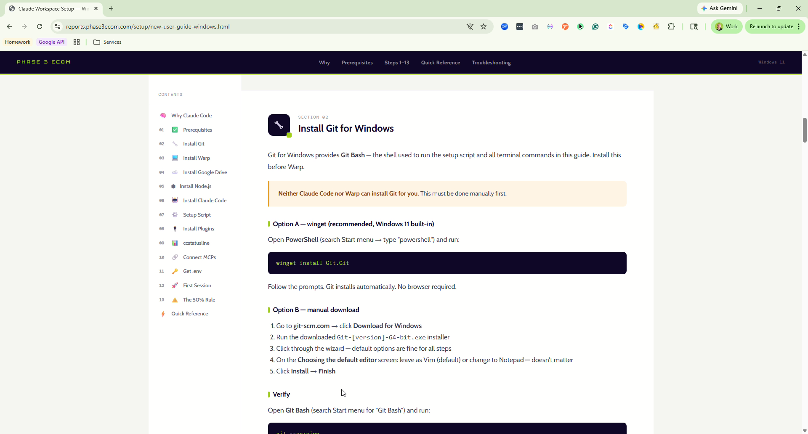
Install Warp
Warp is the terminal Claude Code runs inside.
Download and install
- Go to warp.dev → click Download for Windows
- Run the downloaded installer (.exe)
- Follow the installation wizard → Next → Install → Finish
- Launch Warp from the Start menu or desktop shortcut
- Sign in to Warp or skip (optional — sign-in not required)
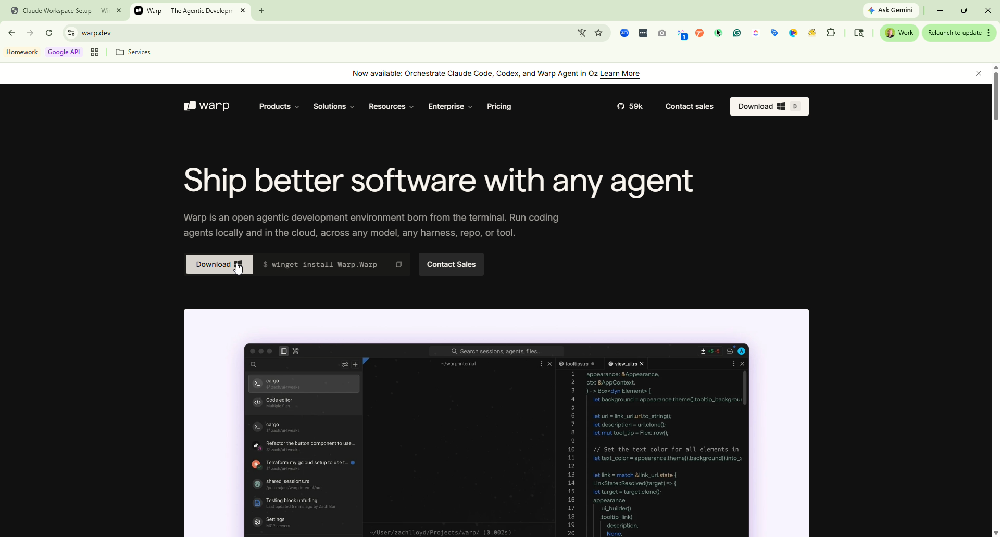
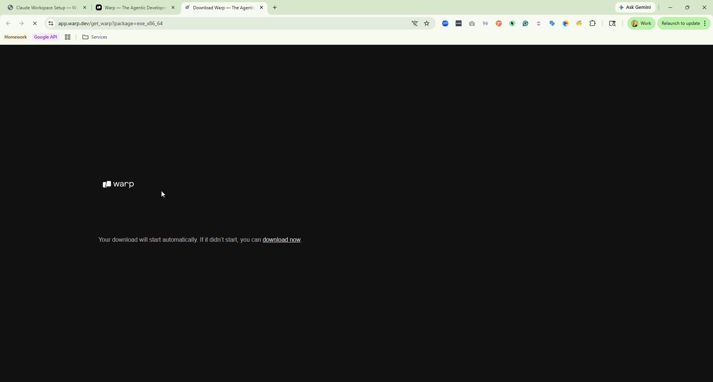
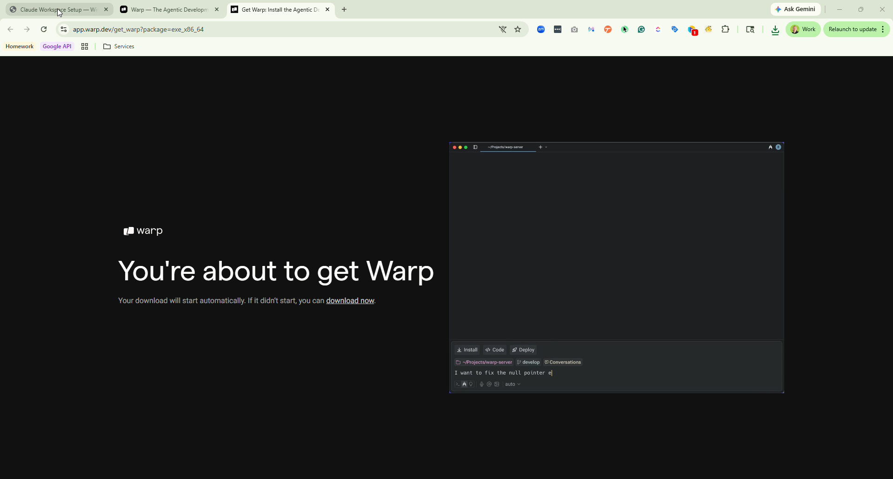
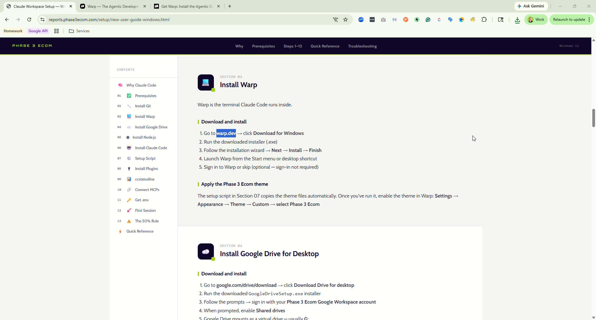
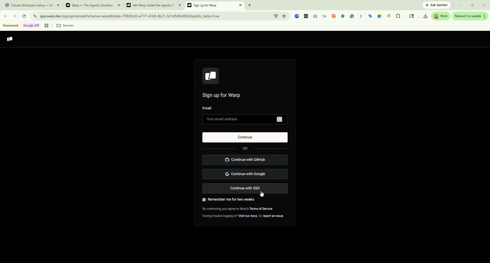
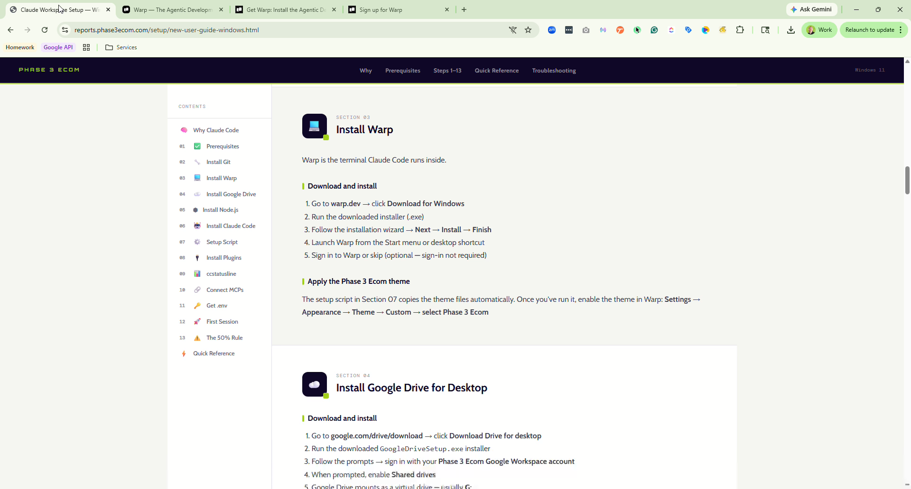
Configure Warp to use Git Bash
Warp needs to use Git Bash as its shell so all commands work correctly.
- Open Warp → click the gear icon (Settings) top right
- Go to Features → Sessions
- Under Default shell, click the dropdown → select Git Bash
If it doesn't appear, click Browse and navigate toC:\Program Files\Git\bin\bash.exe - Close Settings → fully close and reopen Warp
Apply the Phase 3 Ecom theme
The setup script in Section 07 copies the theme files automatically. Once you've run it, enable the theme in Warp: Settings → Appearance → Theme → Custom → select Phase 3 Ecom
Install Google Drive for Desktop
Download and install
- Go to google.com/drive/download → click Download Drive for desktop
- Run the downloaded
GoogleDriveSetup.exeinstaller - Follow the prompts → sign in with your Phase 3 Ecom Google Workspace account
- When prompted, enable Shared drives
- Google Drive mounts as a virtual drive — usually G:
Confirm the path is accessible
Open File Explorer and confirm this path exists:
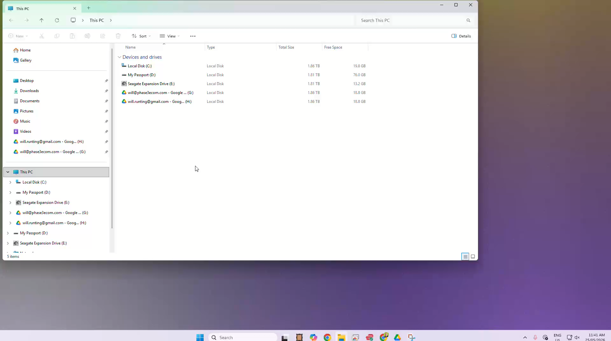
Make files available locally
By default, Google Drive streams files from the cloud. Make the workspace folder available locally so Claude Code can read files reliably — including offline.
Option A — Mirror all files (recommended if disk space allows):
- Right-click the Google Drive icon in the system tray (bottom right)
- Click the gear icon → Preferences
- Select the Google Drive tab
- Switch from Stream files to Mirror files
- Click Save and allow Drive to restart
Option B — Make the folder available offline (lower disk usage):
- Open File Explorer → navigate to
G:\Shared drives\Phase 3 Ecom - Right-click the CLAUDE CODE folder
- Select Make available offline
- Watch the system tray for sync progress — wait for it to complete
Install Node.js (18+)
Claude Code requires Node.js 18+. Choose one of the options below.
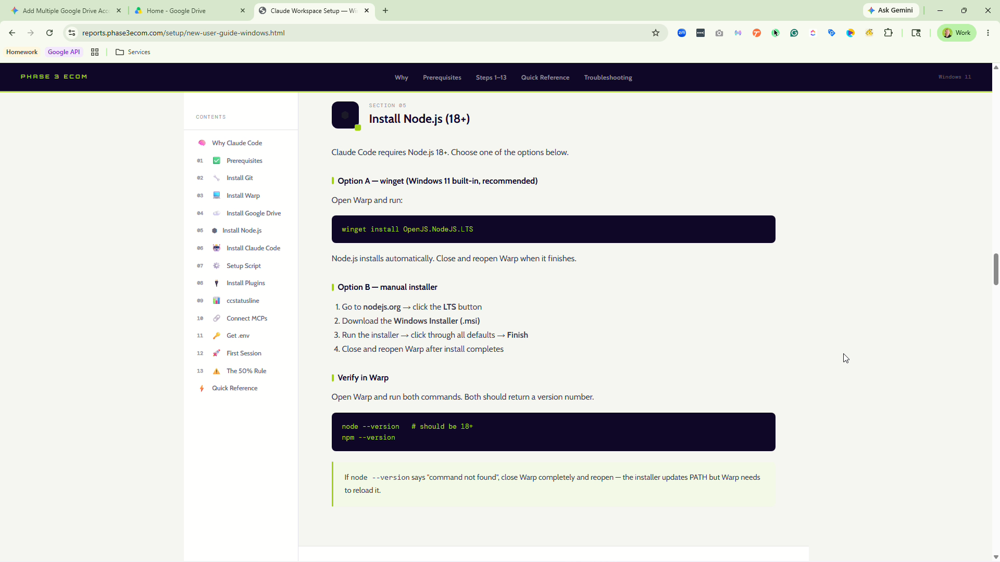
Option A — winget (Windows 11 built-in, recommended)
Open Warp and run:
Node.js installs automatically. Close and reopen Warp when it finishes.
Option B — manual installer
- Go to nodejs.org → click the LTS button
- Download the Windows Installer (.msi)
- Run the installer → click through all defaults → Finish
- Close and reopen Warp after install completes
Verify in Warp
Open Warp and run both commands. Both should return a version number.
node --version says "command not found", close Warp completely and reopen — the installer updates PATH but Warp needs to reload it.Also install jq
The Warp plugin requires jq (a JSON tool). Install it now:
Close and reopen Warp when done. Verify with:
Configure PowerShell Execution Policy
Windows blocks npm-installed tools (including Claude Code) from running by default. You need to allow scripts once before continuing.
.ps1 scripts. PowerShell's default policy (Restricted) blocks them — so running claude after install will fail with a "cannot be loaded" error unless you do this step first.
Run in PowerShell
Open PowerShell (Start menu → search "powershell") and run:
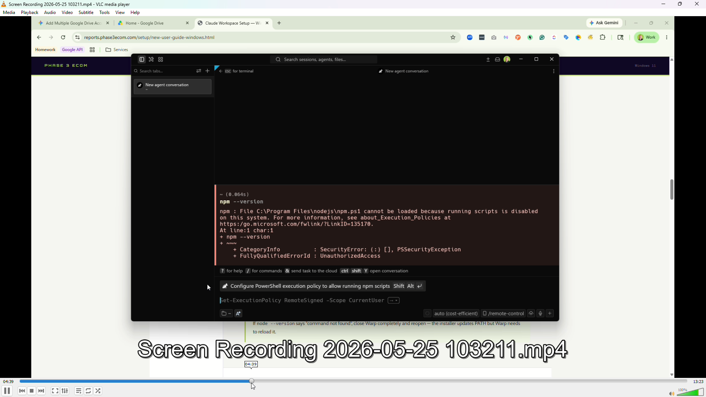
Type Y and press Enter when prompted. This only affects your user account — no admin rights required.
Verify
Should output RemoteSigned. Close PowerShell — all remaining steps use Warp.
Install Claude Code
Open Warp:
Follow the browser auth prompt. Use your Phase 3 Ecom workspace account.
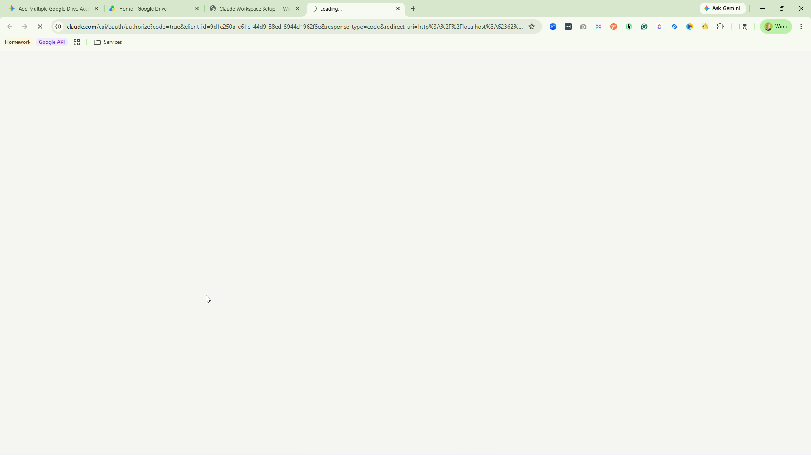
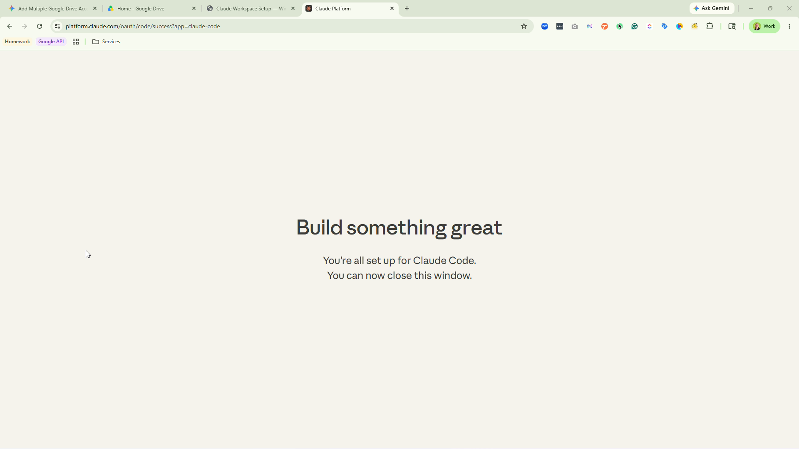
Run Setup Script
Open Warp:
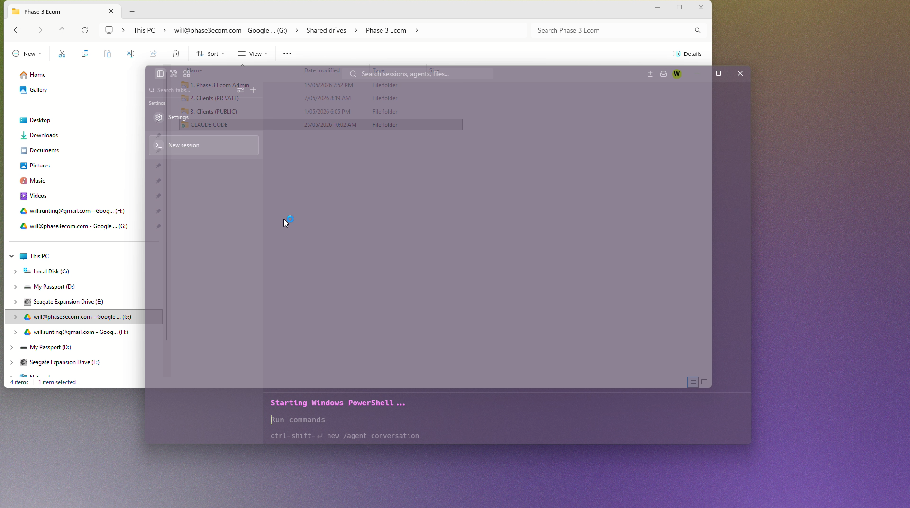
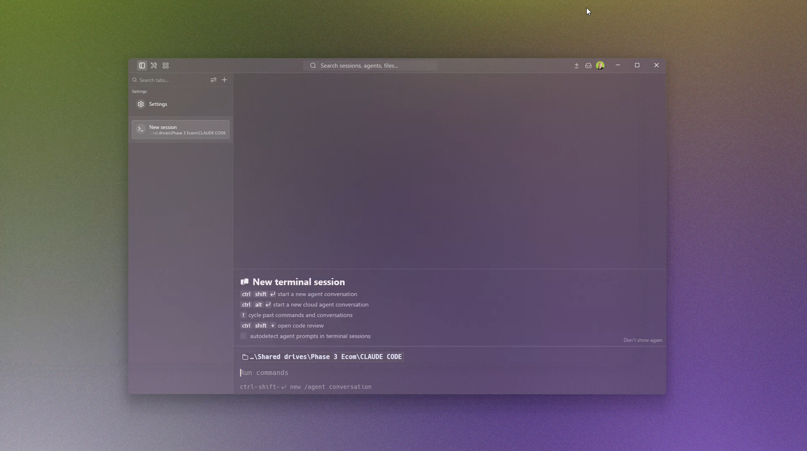
Warp (with Git Bash) maps Windows drive letters to Unix paths: G:\ = /g/, H:\ = /h/, etc. If your Google Drive mounted to a different letter, replace /g/ with the correct letter.
What this installs
- Hooks — caveman mode + completion sound hook (to %USERPROFILE%\.claude\hooks\)
- Skills — 11 P3E-approved skills:
/ADMN-startup-v1,/ADMN-wrapup-v1,/ADMN-client-onboard-v1+ 8 others - %USERPROFILE%\.claude\settings.json — hooks, status line, plugin config
If settings.json already exists, the script prompts you to merge manually.
play-sound.sh hook. On Windows it uses PowerShell's SoundPlayer to play the same WAV notification that macOS plays via afplay. No extra software needed.
After this step: in Warp → Settings → Appearance → Theme → Custom → Phase 3 Ecom
Skills: P3E approved vs local
Skills power slash commands like /ADMN-startup-v1. Two tiers:
- P3E Approved (Drive) — skills in
CLAUDE CODE/Skills/on the Shared Drive. Reviewed by Will, followCATEGORY-skill-name-vNnaming, and sync automatically at every session start. - Local only — skills installed via
npx skills addor/plugin marketplace add. Personal use only — not P3E standard, not synced to Drive.
/ADMN-startup-v1 will overwrite it. Skills catalog: Skills/skills-catalog.xlsx
To submit a skill for P3E use: Create a task in ClickUp → P3E Admin → Skill Submissions list. Attach the SKILL.md file. Will reviews and publishes — your next session start picks it up automatically.
Install Plugins
Open Warp and navigate to the CLAUDE CODE folder:
Inside Claude Code, run these slash commands one at a time (wait for each to complete):
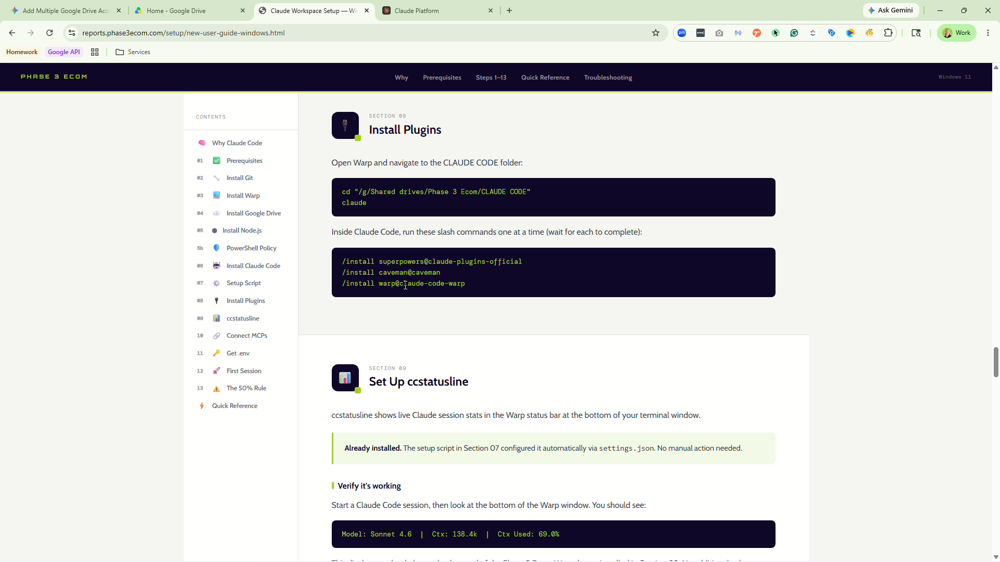
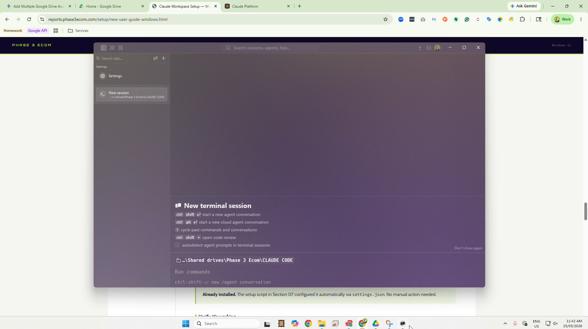
Set Up ccstatusline
ccstatusline shows live Claude session stats in the Warp status bar at the bottom of your terminal window.
settings.json. No manual action needed.Verify it's working
Start a Claude Code session, then look at the bottom of the Warp window. You should see:
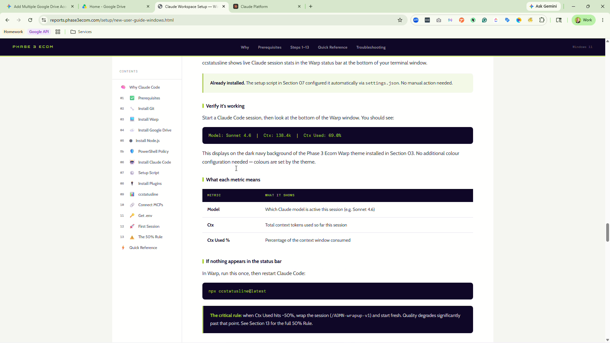
This displays on the dark navy background of the Phase 3 Ecom Warp theme installed in Section 03. No additional colour configuration needed — colours are set by the theme.
What each metric means
| Metric | What it shows |
|---|---|
| Model | Which Claude model is active this session (e.g. Sonnet 4.6) |
| Ctx | Total context tokens used so far this session |
| Ctx Used % | Percentage of the context window consumed |
If nothing appears in the status bar
In Warp, run this once, then restart Claude Code:
/ADMN-wrapup-v1) and start fresh. Quality degrades significantly past that point. See Section 13 for the full 50% Rule.Connect MCPs
MCPs give Claude direct access to Shopify, Google Drive, Klaviyo, etc. Each MCP is connected per user — not shared.
Go to: claude.ai → Settings → Integrations
Priority order
| # | MCP | Notes |
|---|---|---|
| 1 | Shopify | Critical for client work |
| 2 | Google Drive | Critical for reports and docs |
| 3 | ClickUp | Task management |
| 4 | Gmail | Client communication |
| 5 | Klaviyo | Email marketing — connects to P3E account only. Use curl for client accounts. |
| 6+ | Others as needed | See setup/MCP_SETUP.md |
Get .env Credentials
Each client folder needs a .env file with API keys. Ask Will for credentials for the clients you'll be working on. Place the .env file in:
See setup/ENV_TEMPLATE.md for required keys.
First Session
General / admin work
Client-specific work
Once inside, run:
This loads all shared memory — clients, rules, last session, brand guidelines. Always run at the start of every session.
The 50% Rule + Session Rules
Context quality
| Context Used | Quality |
|---|---|
| 0–30% | Fresh, sharp, best-quality work |
| 30–50% | Still functional, starting to lose edge |
| 50–70% | Noticeable degradation: forgetting, repeating, small mistakes |
| 70–90% | Significant degradation: wrong answers, missed context |
| 90%+ | Unreliable — often worse than useless |
When you hit 50%
- Ask Claude: "Summarise what we accomplished and what's pending"
- Run /ADMN-wrapup-v1
- Close terminal tab, open new one, run claude, then /ADMN-startup-v1
- Continue from ~15–25% context
Session Management
- ✅ Always run /ADMN-startup-v1 at the start of every session
- ✅ Always run /ADMN-wrapup-v1 before closing
- ✅ Wrap at 50% context — watch ccstatusline
- ✅ One project per session — no client context-switching
- ✅ Never use /compact
Git & Code
- ✅ Never push directly to main — always branch + PR
- ✅ Never commit .env files
- ✅ Commit frequently — after each meaningful change
- ✅ Commit messages: Add: Fix: Update: Remove: prefix + why
Client Work
- ✅ Never publish campaigns, ads, or flows without explicit approval from Will
- ✅ Ask before destructive operations (delete branches, drop data, force-reset)
- ✅ Never fabricate metrics — use placeholders if data unavailable
- ✅ Australian English in all client deliverables (spelling, DD/MM dates, AUD)
Commands at a Glance
| Task | Command |
|---|---|
| Start session | /ADMN-startup-v1 |
| End session | /ADMN-wrapup-v1 |
| Caveman mode (terse responses) | /caveman |
| Caveman ultra (max compression) | /caveman ultra |
| Normal responses | stop caveman |
Common Issues
memory/ in the CLAUDE CODE root. From a client folder it's at ../../memory/. Check you're inside the Google Drive path.bash setup/install.sh in Warp. Check %USERPROFILE%\.claude\settings.json exists and has a hooks section./install [plugin] again.bash setup/install.sh in Warp — it copies both play-sound.sh and the .wav file to %USERPROFILE%\.claude\. If sound still fails, in Warp run: bash ~/.claude/hooks/play-sound.sh. Ensure your Windows volume is not muted.